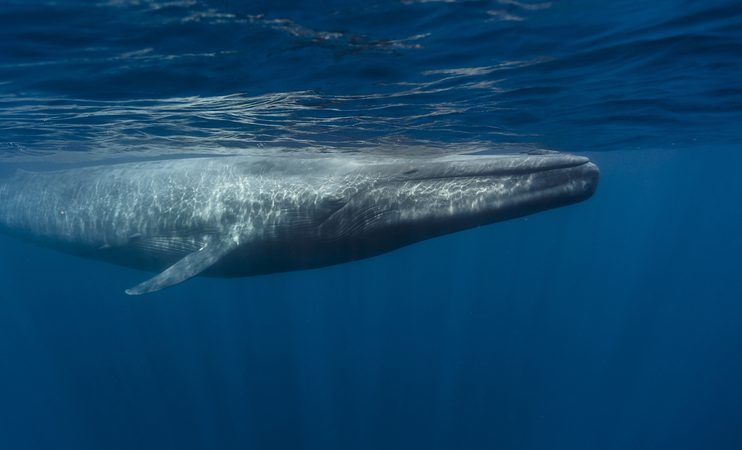
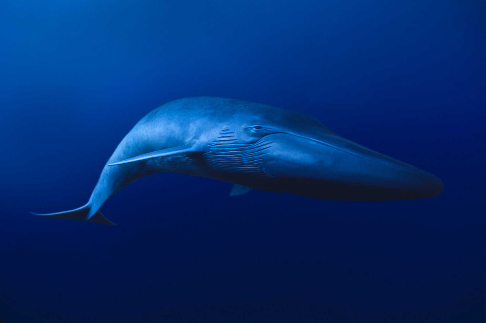
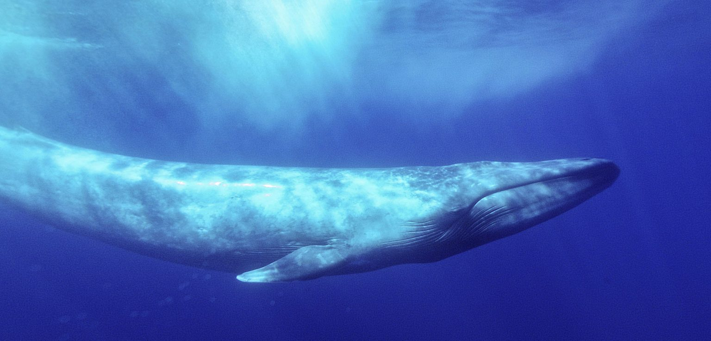
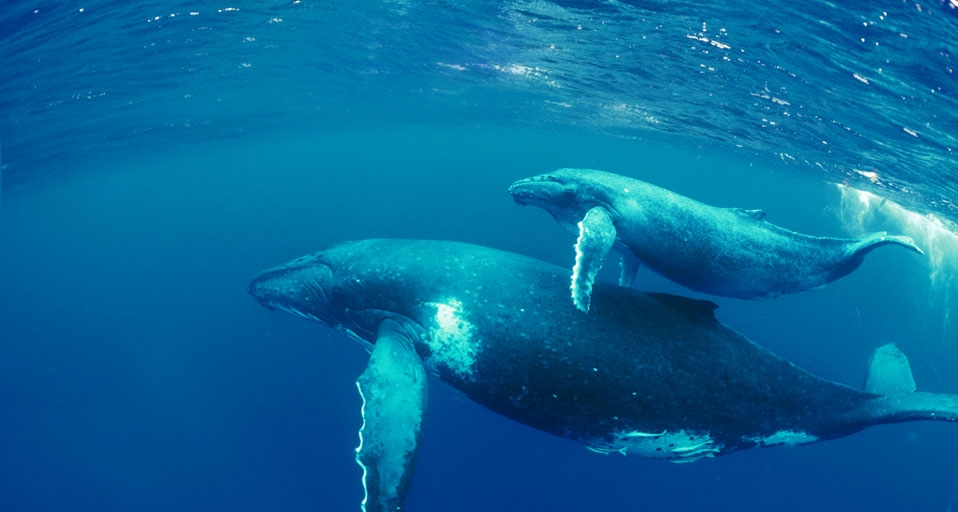
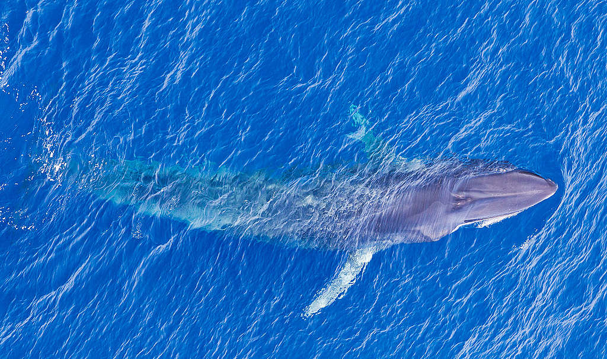
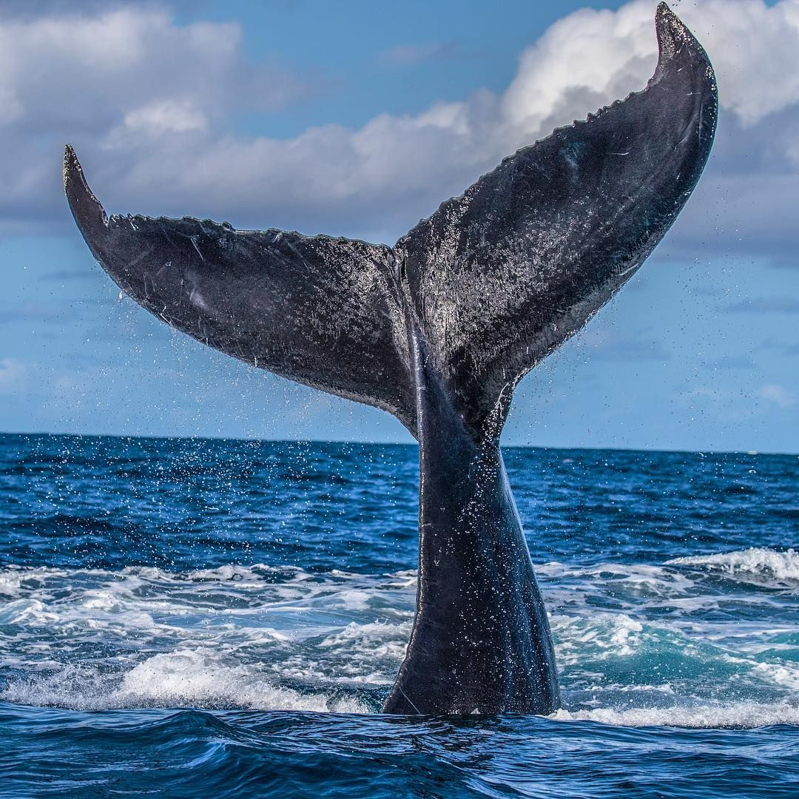

Baleine bleueLe plus grand animal du monde entier n'est ni l'éléphant, ni le rhinocéros ni la girafe, en réalité, le détenteur du record du plus grand animal du monde est un mammifère marin. Vous l'aurez compris, il s'agit bien de la baleine bleue le plus grand animal du monde. La baleine bleue, l'animal le plus grand du monde jamais connu durant toute l'histoire de la Terre, a souffert énormément des pratiques de l'être humain, étant une des espèces les plus affectées par l'intervention de l'Homme. Ces extraordinaires baleines ont une longue histoire, que nous souhaitons aujourd'hui vous transmettre dans cette fiche de race dans laquelle nous parlerons de la baleine bleue. |
 |
|  |
Caractéristiques de la baleine bleueLa baleine bleue est un mammifère marins appartenant à l'espèce des cétacés mysticètes ainsi qu'à la famille Balaenopteridae. Elle reçoit également le nom de rorqual bleu, partageant la famille avec d'autres rorquals comme le rorqual commun ou le rorqual boréal. Ces baleines appartiennent au groupe des baleines à fanons, nommées ainsi en raison de la présence de plusieurs rangées de plaques cornées, qui sont appelés fanons et qui partent du début de leur mâchoire supérieure. Une baleine bleue a entre 300 et 400 fanons de chaque côté de la mâchoire, chacun d'eux mesurant environ un mètre de long pour 50 cm d'épaisseur. |
Taille de la baleine bleueLa taille moyenne d'un spécimen adulte de rorqual bleu ou baleine bleue est d'environ de 24 à 27 mètres, cependant, dans certains cas ont été enregistrés des spécimens avec une longueur dépassant les 30 mètres. Concrètement, il s'agissait d'une baleine bleue qui mesurait 33,63 mètres en total. Dans le cas des bébés baleines bleues, appelés baleineaux, leur longueur moyenne est d'environ 8 mètres. Une fois ces dimensions données, il n'y a plus aucun doute que la baleine bleue est le plus grand animal du monde, y compris en incluant n'importe quel animal préhistorique.Combien pèse la baleine bleue ?Les baleines bleues adultes ont une masse corporelle comprise entre les 100 et les 120 tonnes. Le record de poids est détenu par une baleine de l'océan Pacifique, dont le poids enregistré était de 173 tonnes. Dans ce cas, les baleineaux pèsent jusqu'à 2,5 tonnes, grossissant d'environ 90 kg par jour juste en consommant uniquement et exclusivement du lait maternel |
 |
|  |
Habitat de la baleine bleueLes baleines bleues vivent dans tous les océans de la planète. Il y a plusieurs différentes populations, habituellement différenciées dans leur localisation selon la sous-espèce à laquelle elles appartiennent. Cependant, quand le froid arrive, la baleine bleue migre vers des zones plus chaudes, comme le Golfe du Mexique. Avec environ 2.000 spécimens enregistrés, la population la plus nombre est celle de la B. m. musculus, présente au Nord-Est du Pacifique dans des zones allant des côtes d'Alaska jusqu'à celles du Costa Rica. |
Quelles sont les habitudes et que mange la baleine bleue ?La baleine bleue est un animal migratoire qui vit dans tous les océans du monde, mais qui préfèrent les eaux froides du cercle polaire en été et les eaux chaudes de l'équateur en hiver. Elles sont connues pour la puissance de leurs chants, effectivement, on estime que le chant d'une baleine bleue peut être entendu par une autre qui se trouve à 1.500 km de distance, ces puissantes vocalisations sont de basse fréquence, ce qui leur permet une bonne dispersion et propagation dans l'eau. La reproduction de la baleine bleue commence vers la fin de l'Automne, moment durant lequel commence l'accouplement qui durera jusqu'à la fin de l'Hiver. La baleine bleue est un mammifère et vivipare. Quant à l'alimentation de la baleine bleue, cette dernière se nourrit presque exclusivement de Krill, un crustacé microscopique. Pour consommer ces animaux, la baleine bleue ingère des milliers de litres d'eau qu'elle expulsera hors de sa gueule à la force de sa langue au travers de ses fanons. Ces fanons lui permettent de filtrer le Krill qui restera coincé dans les fanons. Durant ce processus, les baleines bleues peuvent également ingérer quelques poissons ou crustacés de petite taille. |
 |
|  |
La baleine bleue est en voie d'extinction ?Les baleines bleues sont inscrites sur la liste rouge de l'UICN comme étant une espèce en danger critique d'extinction, une situation réellement alarmante qui requiert des mesures extrêmes pour sauver l'espèce. Cette situation a été provoquée par de nombreuses années de chasse, car la viande de baleine était extrêmement prisée dans plusieurs endroits du monde. Elles étaient chassées sans aucun contrôle, même les baleineaux étaient harponnés... Présentement, la chasse à la baleine bleue a été interdite dans de nombreux pays depuis que en 1966 la Commission Baleinière Internationale a pris des mesures d'urgence pour essayer d'assurer la survie de cette espèce. Malgré la prohibition de la chasse, la récupération des populations de baleine bleue n'a pas été impressionnante et elle reste aujourd'hui encore en danger. |